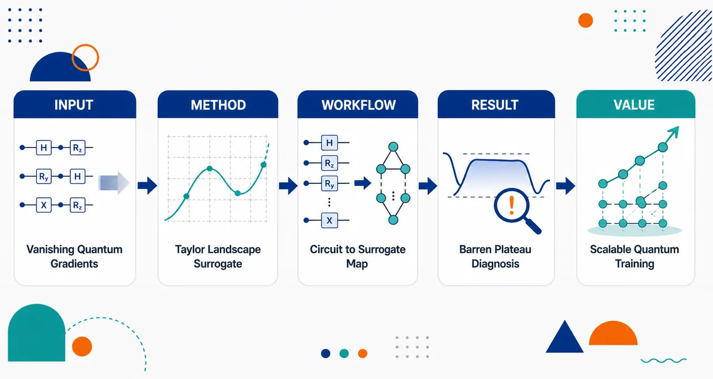
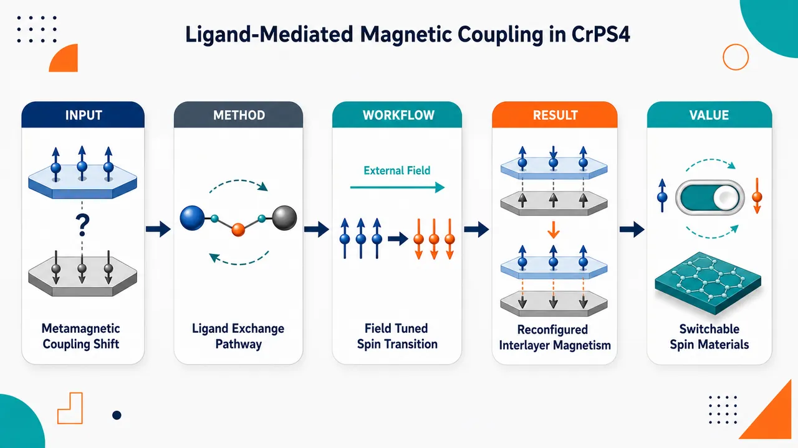
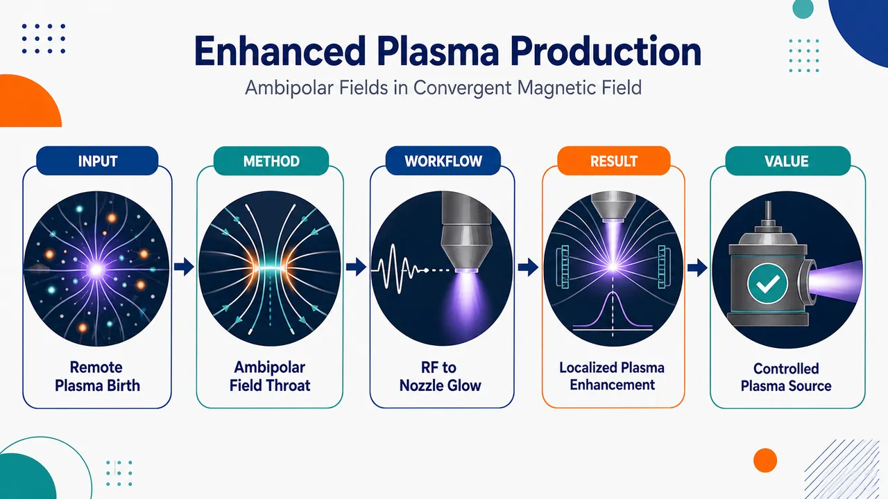

AI × Science 文献日报 2026/06/22
聚焦 AI × 物理 / 化学 / 材料交叉方向，自动过滤明显偏题的医学、教育与社会科学内容，并按主题重新排版，便于快速深读。
AI | 物理 | 化学 | 材料 | 交叉学科
原始候选 93 篇中，已剔除 0 篇明显偏离主线的内容，并从剩余 93 篇主线相关文献中精选 60 篇进入日报页，优先保留 AI × 物理 / 化学 / 材料交叉与关键计算方法工作。
核心关注（ML × ferro / 凝聚态）
8 篇本日进展集中在“数据驱动制备优化”和“第一性原理解析新型 ferro/自旋纹理”两条线：无空穴导体介观钙钛矿电池与铁氧化物纳米颗粒用机器学习/响应面法连接工艺参数和性能。多电子薛定谔方程工作把 sum-of-Gaussians 张量神经网络、模型降阶和 Slater 行列式结合，强化了凝聚态电子结构近似中的可解释约束。铁电与磁性材料侧，BaTiO3/Al2O3 受限共掺杂介电膜、扭转 MnSe 双层和二维手性 SnP2Se6 分别推进了界面极化储能、子层交替磁性和类 Weyl 自旋纹理的材料机制。今日未出现针对 NbOI2、CrI3、CrSBr 的 equivariant GNN、MACE、NEP 或 DFT+U 势函数训练案例，ML 成分主要停留在实验参数建模与电子结构神经表示。
-
01机器学习设计无空穴导体钙钛矿电池Advancing the Design of High‐Efficiency Printable Hole‐Conductor‐Free Mesoscopic Perovskite Solar Cells Through Machine Learning
📄 摘要：面向可印刷介观钙钛矿太阳能电池，使用机器学习推进无空穴导体结构的高效率设计。题录未给出模型类型、训练数据规模、最优器件参数或效率数值；可确认重点在以数据驱动方式关联制备/结构参数与器件性能。
💡 亮点：机器学习被用于无空穴导体介观钙钛矿电池的可印刷结构设计。若能给出可解释特征与实验闭环，将直接服务于低成本钙钛矿光伏工艺优化。
📐 方法要点：用机器学习映射可印刷介观钙钛矿工艺、结构与效率。
🔗 相关工作关联：呼应贝叶斯优化、随机森林/GP 回归、钙钛矿太阳能电池工艺筛选。
💡 对你方向的启示：可把退火、浆料、层厚、孔隙率纳入主动学习闭环实验。
-
02多电子薛定谔方程的高斯和张量网络Spectral convergence of sum-of-Gaussians tensor neural networks for many-electron Schrödinger equation
📄 摘要：改进高斯和张量神经网络求解一维软库仑多电子薛定谔方程。通过核函数高斯和近似下的模型降阶减少张量分解基数，并采用 Slater 行列式严格保持波函数反对称性；数值结果显示小基组即可获得高精度，随基数呈稳健谱收敛。
💡 亮点：高斯和张量网络把核近似、模型降阶和 Slater 反对称约束结合，用很少基函数求解多电子问题。该路线为电子结构中的高维波函数表示提供了可控收敛的神经张量框架。
📐 方法要点：高斯和张量神经网络加 Slater 行列式求多电子波函数。
🔗 相关工作关联：呼应 FermiNet、PauliNet、张量网络、低秩电子结构近似。
💡 对你方向的启示：反对称性硬约束比纯黑箱网络更适合小数据高精度基准。
-
03铁氧化物纳米颗粒合成的实验机器学习Integrated Experimental-Machine Learning Framework for the Synthesis Optimization and Predictive Modeling of Iron Oxide Nanoparticles in Dye Removal Applications
📄 摘要：共沉淀制备铁氧化物纳米颗粒并预测晶粒尺寸和比表面积。比较沉淀剂后，氨水给出更小晶粒 86 Å 和更高比表面积 87.23 m²/g；中心复合设计考察 30–90 °C、100–600 rpm、15–75 min，结合响应面法和机器学习建立合成—结构模型，用于染料去除应用。
💡 亮点：实验设计与机器学习联合优化铁氧化物纳米颗粒共沉淀条件，氨水体系达到 86 Å 晶粒和 87.23 m²/g 比表面积。该范式适合吸附/催化纳米材料的小样本工艺寻优。
📐 方法要点：中心复合设计、响应面法与 ML 预测晶粒和比表面积。
🔗 相关工作关联：呼应纳米颗粒合成 DoE、实验自动化、结构—吸附性能建模。
💡 对你方向的启示：铁氧化物合成可从单因素试错转向可解释工艺窗口搜索。
-
04受限共掺杂介电膜提升储能性能Enhanced energy storage performance of confined co-doping dielectric films via nanoparticle self-assembly in ferroelectric phases
📄 摘要：在同轴静电纺丝纤维的铁电芯层中引入 BaTiO3 与 Al2O3 纳米颗粒，形成聚合物基受限共掺杂介电膜。性能提升来自高极化 BaTiO3、宽带隙 Al2O3 以及 BaTiO3/Al2O3 异质界面的协同作用，实现更优介电储能表现。
💡 亮点：BaTiO3/Al2O3 被限制在铁电芯层内自组装，兼顾高极化和高击穿相关优势。该结构把纳米界面工程推进到聚合物介电储能薄膜的空间选择性掺杂层面。
📐 方法要点：同轴静电纺丝限制 BaTiO3/Al2O3 在铁电相中自组装。
🔗 相关工作关联：呼应聚合物铁电复合介质、界面极化、纳米填料储能调控。
💡 对你方向的启示：ML 可学习填料空间分布、界面密度与击穿/极化的耦合。
-
05铁谷材料中的压电操控与堆垛磁性Piezoelectric manipulation and stacking-dependent magnetism in ferrovalley materials
📄 摘要：理论提出谷—压电耦合策略，将反常谷霍尔效应和压电响应统一到铁谷二维体系中，并可推广至一般谷电子材料。第一性原理用于分析铁谷材料中的反常谷霍尔效应、层霍尔效应及堆垛依赖磁性，强调压电调控对电子输运通道的作用。
💡 亮点：铁谷二维体系中，压电响应被用作操控反常谷霍尔和层霍尔效应的手柄。该耦合方案把力电调控引入谷电子输运与堆垛磁性的联合设计。
📐 方法要点：第一性原理分析铁谷体系的谷—压电耦合与堆垛磁性。
🔗 相关工作关联：呼应 ferrovalley、谷霍尔效应、二维压电、堆垛依赖磁序。
💡 对你方向的启示：筛选铁谷材料时应把压电张量和 Berry 曲率共同入特征。
-
06磁结构相变削弱磁热效应与磁化率Decrease of magnetocaloric effect and magnetic susceptibility of ferromagnet due to magnetostructural phase transition
📄 摘要：建立基于自旋交换能和磁子系统熵的理论模型，描述发生磁结构相变铁磁体的磁化强度温度依赖。通过拟合实验磁化曲线提取相变控制参数，并计算磁场诱导温变和含顺磁过程贡献的磁化率；结果显示磁结构相变虽带来突变，却会降低磁热效应与磁化率。
💡 亮点：自旋交换能—熵模型表明磁结构相变不必然增强磁制冷响应，反而可削弱磁热效应和磁化率。该结论对一阶磁相变材料的磁热性能评估提出约束。
📐 方法要点：用交换能和磁熵模型拟合磁结构相变下的磁化曲线。
🔗 相关工作关联：呼应磁热材料、Landau 型相变模型、磁化率温度依赖分析。
💡 对你方向的启示：构建磁热 ML 数据集时需显式标注磁结构相变控制参数。
-
07扭转反铁磁双层中的子层交替磁性Sublayer-resolved altermagnetism in twisted antiferromagnetic bilayers with spin-layer coupling
📄 摘要：扭转两层反铁磁 MnSe 单层形成范德华双层，出现子层分辨的 i 波交替磁性自旋劈裂。莫尔工程与自旋—层耦合共同产生可在不同子层解析的交替磁响应，为扭转磁性材料中调控新型自旋纹理提供机制。
💡 亮点：扭转 MnSe 反铁磁双层产生子层分辨 i 波交替磁性，显示莫尔势可重构自旋劈裂。该结果把交替磁性拓展到可扭转、可层选择的二维磁平台。
📐 方法要点：扭转 MnSe 反铁磁双层中解析子层 i 波交替磁性劈裂。
🔗 相关工作关联：呼应莫尔磁性、altermagnetism、自旋—层耦合、二维反铁磁体。
💡 对你方向的启示：磁性材料表征符应加入扭角、子层索引和局域堆垛环境。
-
08二维手性 SnP2Se6 的刺猬类 Weyl 自旋纹理Hedgehog Weyl-like spin texture in the two-dimensional chiral SnP₂Se₆ semiconductor
📄 摘要：二维手性半导体 SnP2Se6 具有强自旋轨道耦合和非平庸拓扑特征，计算发现刺猬状类 Weyl 自旋纹理。该现象把通常见于半金属的 Weyl 型自旋结构引入原子级薄半导体，为低功耗自旋电子器件提供可开关/可调控的半导体候选。
💡 亮点：手性二维 SnP2Se6 中出现刺猬状类 Weyl 自旋纹理，突破 Weyl 物理主要依赖半金属的限制。强 SOC 半导体平台有利于把拓扑自旋纹理接入可栅控器件。
📐 方法要点：第一性原理揭示手性 SnP2Se6 的刺猬类 Weyl 自旋纹理。
🔗 相关工作关联：呼应手性半导体、Rashba/Dresselhaus 自旋纹理、拓扑自旋电子学。
💡 对你方向的启示：拓扑材料 ML 筛选可加入手性空间群和动量空间自旋 winding。
今日摘要
总览：今日条目集中在铁电极化、二维磁性与量子多体计算三条主线上：弛豫铁电体交流极化、铁电超晶格位错调控极性拓扑、滑移铁电 SnP₂S₆ 的二次谐波判向，以及锗碘杂化铁电体的低矫顽场与卤化物钙钛矿的位移电流玻璃系数同时出现。磁性与超导部分覆盖扭转反铁磁双层的子层分辨交错磁性、手性 SnP₂Se₆ 的刺猬状类外尔自旋纹理、CrPS₄ 配体介导磁耦合、UTe₂ 多轨道涨落、Re₂Zr Kagome 晶格多带超导和高压一维范德瓦耳斯 InSeI 的多非晶超导。方法上，机器学习合成优化、含物理约束辛算符网络、高斯和张量神经网络、张量网络环簇展开、矩阵乘积态自旋模型反演与有限浴开放量子精确动力学，贯穿能源材料、量子模拟和非马尔可夫动力学。
热点：极化材料与非线性光电响应 → 通过交流极化时间尺度、过应变弛豫位错、层间滑移和化学键工程调控畴结构、极化翻转与体光伏位移电流 → 典型工作包括弛豫铁电体交流极化介观畴演化、铁电超晶格位错主导极性拓扑、SnP₂S₆ 二次谐波判定极化取向、杂化锗碘铁电体低矫顽场和铁电卤化物钙钛矿高玻璃系数。二维磁性、谷物理与拓扑自旋纹理 → 利用扭角、层自旋耦合、压电操控、配体桥联和塞曼激活贝里曲率产生可调磁序与输运异常 → 典型工作包括扭转反铁磁双层子层交错磁性、铁谷材料堆垛依赖磁性、手性 SnP₂Se₆ 刺猬状类外尔自旋纹理、CrPS₄ 跨变磁转变磁耦合和中心反演非磁金属体相贝里曲率磁输运。超导与强关联量子态 → 从材料微观自由度和外场驱动两端识别配对、涡旋和热力学响应 → 典型工作包括 Re₂Zr 多带超导、UTe₂ 中 GGA+U 与随机相近似得到的磁涨落各向异性、LaFeAsO 非线性声子光控结构、二维超导涡旋各向异性运动和分数量子霍尔体系涌现分子。数据驱动与张量网络量子计算 → 用机器学习优化合成与器件参数，用张量神经网络、矩阵乘积态、过程张量和环簇展开压缩多体希尔伯特空间与非马尔可夫记忆核 → 典型工作包括无空穴导体介观钙钛矿太阳能电池打印设计、氧化铁纳米颗粒染料去除合成优化、多电子薛定谔方程高斯和张量神经网络、费米－哈伯德梯子的自旋模型反演和有限浴开放量子系统精确动力学。
今日文献
60 篇 · 13 含图深析-
01
📄 摘要：围绕变分量子算法的 barren plateau 难题，分析量子代价景观中梯度随系统规模的可扩展性，并讨论可用泰勒展开构造经典代理模型的条件。论文检验“避免梯度指数消失可能导致经典可模拟性”的猜想，面向近中期量子算法的可扩展性边界。
💡 亮点：该工作把 VQA 的可训练性与泰勒经典代理模型联系起来，给出避免 barren plateau 时的可扩展性约束。它直接影响量子机器学习与量子化学变分算法的设计准则。
📖 展开分析 + 配图

研究问题变分量子算法的代价景观中，梯度会如何随量子系统尺寸增大而缩放？核心关注“贫瘠高原”现象：当量子比特数增加时，代价函数梯度可能指数级消失，使优化器像在几乎完全平坦的高维地形中寻找方向，训练变得极其困难。创新方法将“梯度可扩展性分析”与“泰勒代理建模”结合：用泰勒展开构造量子代价景观的局部/近似代理，以更低成本刻画原始代价函数的形状、斜率和曲率。Aha 点在于不直接面对完整复杂量子景观，而是用可扩展的泰勒近似来分析或替代景观，从而理解梯度消失与训练可行性。工作流程输入变分量子线路、参数化量子态和代价函数；计算或分析代价景观中的梯度随系统尺寸变化的行为；识别梯度指数衰减导致的贫瘠高原区域；围绕选定参数点构造泰勒展开代理；用该代理近似原始量子代价景观的局部形状；输出关于梯度可扩展性、景观可近似性和优化难度的判断。关键结果论文强调量子代价景观中的梯度缩放是决定变分量子算法能否训练的关键因素，并聚焦贫瘠高原中的指数梯度消失问题；同时指出泰勒代理可作为分析和近似量子代价景观的工具，用于探索代价景观近似是否能随系统尺寸保持可扩展。摘要未给出具体缩放界、定理数值或实验性能提升。应用价值该研究有助于诊断变分量子算法训练失败的根源，为量子机器学习、量子化学模拟和组合优化中的参数化量子线路设计提供指导；泰勒代理还可用于低成本预估代价景观、辅助优化器选择、提前识别贫瘠高原风险，从而提升未来量子算法的可训练性与可扩展性。核心概览
论文研究变分量子算法中代价景观梯度随系统尺寸的缩放，并讨论用泰勒代理近似缓解/分析贫瘠高原问题，属量子机器学习与变分量子算法方向。
方法要点
- 分析变分量子算法代价函数景观中梯度随系统尺寸变化的缩放行为。
- 聚焦梯度指数消失的“贫瘠高原”问题。
- 讨论使用泰勒展开/泰勒代理来构造可扩展的代价景观近似。
- 摘要未详述具体量子线路、哈密顿量、优化器或理论证明形式。
关键结果
- 摘要明确指出论文关注梯度可扩展性与贫瘠高原中的指数梯度消失现象。
- 摘要表明论文讨论了泰勒代理在量子代价景观近似中的可扩展性。
- 具体定理、缩放界、实验验证结果或数值表现摘要未详述。
创新性判断
- 可能的新颖点在于将“梯度缩放分析”与“泰勒代理近似”结合，用于研究或近似变分量子算法的代价景观。
- 相比仅分析贫瘠高原或仅提出优化技巧的工作，该论文可能更强调代价景观的可代理建模及其随系统尺寸的可扩展性。
- 但摘要信息极少，无法确定其是否提出了新的理论界、算法框架或实验方案；上述创新性判断具有不确定性。
-
02
📊 含图深析
📄 摘要：共沉淀制备铁氧化物纳米颗粒并预测晶粒尺寸和比表面积。比较沉淀剂后，氨水给出更小晶粒 86 Å 和更高比表面积 87.23 m²/g；中心复合设计考察 30–90 °C、100–600 rpm、15–75 min，结合响应面法和机器学习建立合成—结构模型，用于染料去除应用。
💡 亮点：实验设计与机器学习联合优化铁氧化物纳米颗粒共沉淀条件，氨水体系达到 86 Å 晶粒和 87.23 m²/g 比表面积。该范式适合吸附/催化纳米材料的小样本工艺寻优。
📖 展开分析 + 配图
 研究问题如何在共沉淀法制备铁氧化物纳米粒子时，通过选择沉淀剂并调控合成条件，获得更适合染料去除的晶粒尺寸和比表面积；核心矛盾是传统实验筛选耗时、参数关系复杂，难以快速预测材料结构与吸附应用性能。创新方法构建“实验合成—沉淀剂对比—机器学习预测”的一体化框架：用两种沉淀剂制备铁氧化物纳米粒子，获取结构表征数据，再训练机器学习模型预测晶粒尺寸和比表面积，把材料合成参数转化为可计算、可预判的染料去除性能优化线索。工作流程输入合成条件与沉淀剂类型，经共沉淀反应生成铁氧化物纳米粒子；随后进行材料表征，提取晶粒尺寸、比表面积等关键指标；再将实验数据输入机器学习模型进行训练与预测；最终输出面向染料去除应用的优选纳米粒子结构参数和合成方案。关键结果研究实现了对两种沉淀剂制备铁氧化物纳米粒子的对比分析，并将机器学习用于晶粒尺寸和比表面积预测；结果指向一种可由实验数据驱动的合成优化路径，为筛选更高染料去除潜力的铁氧化物纳米材料提供预测工具，但摘要未给出具体去除率、吸附容量或模型精度数值。应用价值该框架可减少反复试错式纳米材料合成实验，帮助快速锁定适合染料废水处理的铁氧化物纳米粒子制备条件；在视觉上可呈现为“实验烧杯 + 纳米颗粒 + 机器学习芯片 + 染料废水净化”的闭环优化系统。
研究问题如何在共沉淀法制备铁氧化物纳米粒子时，通过选择沉淀剂并调控合成条件，获得更适合染料去除的晶粒尺寸和比表面积；核心矛盾是传统实验筛选耗时、参数关系复杂，难以快速预测材料结构与吸附应用性能。创新方法构建“实验合成—沉淀剂对比—机器学习预测”的一体化框架：用两种沉淀剂制备铁氧化物纳米粒子，获取结构表征数据，再训练机器学习模型预测晶粒尺寸和比表面积，把材料合成参数转化为可计算、可预判的染料去除性能优化线索。工作流程输入合成条件与沉淀剂类型，经共沉淀反应生成铁氧化物纳米粒子；随后进行材料表征，提取晶粒尺寸、比表面积等关键指标；再将实验数据输入机器学习模型进行训练与预测；最终输出面向染料去除应用的优选纳米粒子结构参数和合成方案。关键结果研究实现了对两种沉淀剂制备铁氧化物纳米粒子的对比分析，并将机器学习用于晶粒尺寸和比表面积预测；结果指向一种可由实验数据驱动的合成优化路径，为筛选更高染料去除潜力的铁氧化物纳米材料提供预测工具，但摘要未给出具体去除率、吸附容量或模型精度数值。应用价值该框架可减少反复试错式纳米材料合成实验，帮助快速锁定适合染料废水处理的铁氧化物纳米粒子制备条件；在视觉上可呈现为“实验烧杯 + 纳米颗粒 + 机器学习芯片 + 染料废水净化”的闭环优化系统。核心概览
该论文属于纳米材料合成优化与机器学习辅助建模方向，研究共沉淀法制备铁氧化物纳米粒子，比较两种沉淀剂，并用机器学习预测晶粒尺寸和比表面积，以服务染料去除应用优化。
方法要点
- 采用共沉淀法合成铁氧化物纳米粒子。
- 比较两种不同沉淀剂对所得纳米粒子性质的影响。
- 构建机器学习模型，用于预测晶粒尺寸与比表面积。
- 将材料结构/表征指标与染料去除应用中的性能优化目标关联。
- 具体实验条件、沉淀剂种类、模型类型、输入特征与评价指标摘要未详述。
关键结果
- 论文明确关注铁氧化物纳米粒子的合成条件优化。
- 摘要表明两种沉淀剂被用于对比分析，但具体优劣结论摘要未详述。
- 机器学习被用于预测晶粒尺寸和比表面积。
- 研究目标是提升或优化染料去除性能，但具体去除率、吸附容量或动力学结果摘要未详述。
创新性判断
- 可能的新颖点在于将实验合成、沉淀剂筛选与机器学习预测整合到同一框架中，用于铁氧化物纳米粒子的应用导向优化。
- 相较于单纯实验制备或单一性能测试，该工作可能强调“实验—机器学习”协同优化，但摘要信息有限，无法判断其算法、数据集规模或优化策略是否具有实质方法学创新。
- 若论文确实实现了由合成参数预测晶粒尺寸和比表面积，并进一步服务染料去除性能调控，则其创新性更偏应用集成型，而非一定是全新材料体系或全新机器学习算法；这一判断仍需全文验证。
-
03
📊 含图深析
📄 摘要：理论提出谷—压电耦合策略，将反常谷霍尔效应和压电响应统一到铁谷二维体系中，并可推广至一般谷电子材料。第一性原理用于分析铁谷材料中的反常谷霍尔效应、层霍尔效应及堆垛依赖磁性，强调压电调控对电子输运通道的作用。
💡 亮点：铁谷二维体系中，压电响应被用作操控反常谷霍尔和层霍尔效应的手柄。该耦合方案把力电调控引入谷电子输运与堆垛磁性的联合设计。
📖 展开分析 + 配图
 研究问题二维铁谷材料中，谷自由度、磁性、压电性与输运行为如何相互耦合？尤其是能否通过压电效应和层间堆垛方式，像“旋钮”一样调控反常谷霍尔效应与磁性状态。创新方法将铁谷效应、反常谷霍尔输运、压电响应和堆垛依赖磁性放入同一二维材料框架中分析；核心 Aha 点是利用压电形变和层间堆垛作为可视化调控手柄，实现对谷输运与磁性排列的协同操控。工作流程从二维铁谷材料结构出发，识别谷相关电子态与反常谷霍尔效应；进一步分析材料的压电响应，评估应变或电-机械耦合对性质的调节；随后比较不同层间堆垛构型下的磁性差异；最终建立“结构堆垛—压电调控—谷输运—磁性响应”的多物理关联图景。关键结果该体系表现出反常谷霍尔效应，说明不同谷可产生可区分的横向输运响应；材料具有压电响应，可作为外部调控通道；不同堆垛方式会改变磁性行为，显示出明显的堆垛依赖磁学特征；这些结果共同指向二维铁谷材料中的多功能耦合调控能力。应用价值为低维谷电子器件、自旋/谷联合信息处理器件和多功能纳米机电器件提供设计思路；可将压电应变、层间堆垛和磁性状态转化为可调控的信息开关，用于未来可重构、低功耗、多物理场耦合纳米器件。
研究问题二维铁谷材料中，谷自由度、磁性、压电性与输运行为如何相互耦合？尤其是能否通过压电效应和层间堆垛方式，像“旋钮”一样调控反常谷霍尔效应与磁性状态。创新方法将铁谷效应、反常谷霍尔输运、压电响应和堆垛依赖磁性放入同一二维材料框架中分析；核心 Aha 点是利用压电形变和层间堆垛作为可视化调控手柄，实现对谷输运与磁性排列的协同操控。工作流程从二维铁谷材料结构出发，识别谷相关电子态与反常谷霍尔效应；进一步分析材料的压电响应，评估应变或电-机械耦合对性质的调节；随后比较不同层间堆垛构型下的磁性差异；最终建立“结构堆垛—压电调控—谷输运—磁性响应”的多物理关联图景。关键结果该体系表现出反常谷霍尔效应，说明不同谷可产生可区分的横向输运响应；材料具有压电响应，可作为外部调控通道；不同堆垛方式会改变磁性行为，显示出明显的堆垛依赖磁学特征；这些结果共同指向二维铁谷材料中的多功能耦合调控能力。应用价值为低维谷电子器件、自旋/谷联合信息处理器件和多功能纳米机电器件提供设计思路；可将压电应变、层间堆垛和磁性状态转化为可调控的信息开关，用于未来可重构、低功耗、多物理场耦合纳米器件。核心概览
该论文关注二维铁谷材料，研究其反常谷霍尔效应、压电响应、输运性质及堆垛方式对磁性的影响，属于二维磁性/谷电子学与多功能纳米器件调控方向。
方法要点
- 围绕二维铁谷体系，分析其反常谷霍尔效应与谷相关输运行为。
- 考察材料的压电响应，探讨利用压电效应进行性质调控的可能性。
- 比较不同堆垛方式下的磁性差异，研究堆垛依赖的磁学行为。
- 将谷自由度、磁性、压电性和输运特性联系起来，面向多功能纳米器件应用进行讨论。
- 具体计算方法、模型体系、材料名称与参数设置摘要未详述。
关键结果
- 摘要明确指出该工作涉及二维铁谷体系中的反常谷霍尔效应。
- 摘要明确指出该体系具有压电响应，并可用于性质调控。
- 摘要明确指出堆垛方式会影响磁性，存在堆垛依赖的磁学行为。
- 摘要认为这些性质有助于多功能纳米器件调控。
- 具体定量结果、性能指标、能带特征、磁矩大小、霍尔响应强度等摘要未详述。
创新性判断
- 可能的新颖点在于将铁谷效应、压电调控、反常谷霍尔效应和堆垛依赖磁性结合到同一二维材料体系中讨论。
- 若该工作确实实现了通过压电效应或堆垛方式调控谷输运与磁性，则相对常规二维谷电子学或二维磁性研究具有多物理场耦合调控的新意。
- 其潜在创新还可能体现在面向多功能纳米器件的协同设计思路，但具体是否为首次提出、相比已有材料有何优势，摘要未详述，无法确定。
-
04
📊 含图深析
📄 摘要：建立基于自旋交换能和磁子系统熵的理论模型，描述发生磁结构相变铁磁体的磁化强度温度依赖。通过拟合实验磁化曲线提取相变控制参数，并计算磁场诱导温变和含顺磁过程贡献的磁化率；结果显示磁结构相变虽带来突变，却会降低磁热效应与磁化率。
💡 亮点：自旋交换能—熵模型表明磁结构相变不必然增强磁制冷响应，反而可削弱磁热效应和磁化率。该结论对一阶磁相变材料的磁热性能评估提出约束。
📖 展开分析 + 配图
 研究问题铁磁体在磁结构相变附近为何会出现磁化强度下降、磁化率降低以及磁热效应减弱：画面可表现为铁磁晶格从有序排列转向结构重排，磁矩箭头变短、变乱，旁边的磁热效应温度变化曲线同步下滑。创新方法提出一个同时纳入自旋交换能与磁子系统熵的理论模型，把“磁矩相互作用”与“磁熵贡献”放进同一热力学框架，用磁化曲线拟合揭示磁结构相变如何削弱磁响应；Aha 点是用熵与交换能的竞争解释磁热效应衰减，而非只做经验曲线拟合。工作流程输入铁磁体磁化曲线及相变附近温度/磁场信息；建立包含自旋交换能和磁子系统熵的模型；拟合磁化曲线；提取磁化强度随温度和磁场的变化；进一步推导磁化率与磁热效应变化；输出相变附近磁响应下降的理论解释。关键结果模型能够再现磁结构相变附近磁化强度下降，并解释磁化率降低与磁热效应减弱；画面可用三条下降曲线并列呈现：磁化强度 M 下滑、磁化率 χ 下滑、磁热效应 ΔT 或 ΔS 下滑，三者共同指向“磁结构相变区”。应用价值为理解和预测磁制冷材料在相变附近性能衰减提供理论工具，可帮助筛选或优化铁磁材料，避免在关键工作温区出现磁热效应下降，从而提升磁制冷器件的稳定性与设计可靠性。
研究问题铁磁体在磁结构相变附近为何会出现磁化强度下降、磁化率降低以及磁热效应减弱：画面可表现为铁磁晶格从有序排列转向结构重排，磁矩箭头变短、变乱，旁边的磁热效应温度变化曲线同步下滑。创新方法提出一个同时纳入自旋交换能与磁子系统熵的理论模型，把“磁矩相互作用”与“磁熵贡献”放进同一热力学框架，用磁化曲线拟合揭示磁结构相变如何削弱磁响应；Aha 点是用熵与交换能的竞争解释磁热效应衰减，而非只做经验曲线拟合。工作流程输入铁磁体磁化曲线及相变附近温度/磁场信息；建立包含自旋交换能和磁子系统熵的模型；拟合磁化曲线；提取磁化强度随温度和磁场的变化；进一步推导磁化率与磁热效应变化；输出相变附近磁响应下降的理论解释。关键结果模型能够再现磁结构相变附近磁化强度下降，并解释磁化率降低与磁热效应减弱；画面可用三条下降曲线并列呈现：磁化强度 M 下滑、磁化率 χ 下滑、磁热效应 ΔT 或 ΔS 下滑，三者共同指向“磁结构相变区”。应用价值为理解和预测磁制冷材料在相变附近性能衰减提供理论工具，可帮助筛选或优化铁磁材料，避免在关键工作温区出现磁热效应下降，从而提升磁制冷器件的稳定性与设计可靠性。核心概览
本文属于磁性材料与磁热效应理论研究。作者构建包含自旋交换能和磁子系统熵的理论模型，并通过拟合磁化曲线，解释铁磁体在磁结构相变附近磁化强度、磁化率及磁热效应下降的现象。
方法要点
- 建立同时考虑自旋交换能与磁子系统熵的理论模型。
- 利用该模型拟合磁化曲线。
- 通过磁化曲线分析磁结构相变附近的磁化强度变化。
- 从模型中讨论磁化率和磁热效应在相变附近的下降行为。
- 具体材料体系、参数形式、拟合方法与实验条件摘要未详述。
关键结果
- 模型能够描述磁结构相变附近磁化强度的下降。
- 模型能够解释或拟合磁化率在该区域的降低。
- 模型也用于描述铁磁体磁热效应的减弱。
- 摘要未给出定量结果、拟合优度、温度范围或具体材料数据。
创新性判断
- 可能的新颖点在于将自旋交换能与磁子系统熵同时纳入一个理论框架，用于解释磁结构相变导致的磁热效应和磁化率下降。
- 相比单纯经验拟合磁化曲线的工作，该研究可能更强调热力学/磁子系统熵对磁热效应减弱的作用。
- 其创新性强弱无法仅凭摘要准确判断，因为摘要未详述模型形式、与已有理论的差异、适用材料及验证程度。
-
05
📊 含图深析
📄 摘要：针对层状半导体反铁磁体 CrPS₄，研究其门电压可调变磁相变、正且振荡的隧穿磁阻和 Fano 共振发光背后的磁耦合。结果强调配体轨道在跨越变磁转变时调节层内/层间磁相互作用，对二维磁性隧穿器件的磁态控制至关重要。
💡 亮点：CrPS₄ 的变磁行为被解析为配体参与的磁耦合重排，而不仅是 Cr 自旋翻转。该图像解释其门控磁相和异常隧穿磁阻的材料根源。
📖 展开分析 + 配图

研究问题层状反铁磁半导体 CrPS₄ 在变磁转变过程中，层间磁耦合为何会改变；磁相互作用是否不仅由 Cr 自旋直接决定，还通过 S/P 等配体轨道在层间传递。创新方法将“配体介导”作为解释 CrPS₄ 磁耦合变化的核心视角，把变磁转变当作可调开关，观察磁相从反铁磁态切换时，配体参与的层间交换通道如何重排，这是从配体桥梁而非单纯 Cr-Cr 自旋作用理解磁性变化的 Aha 点。工作流程以层状 CrPS₄ 晶体为输入对象，在外场或相变条件下诱导变磁转变；比较转变前后的磁耦合状态；将 Cr 自旋、层间排列与配体参与路径联系起来；最终输出配体介导的层间磁相互作用通道图景。关键结果CrPS₄ 中存在由配体参与传递的磁耦合；该耦合在变磁转变前后发生改变，说明层间磁性并非固定不变，而是会随磁相切换重新组织；结果揭示了层状反铁磁半导体中隐藏的微观层间交换路径。应用价值为调控二维或层状反铁磁半导体的磁态提供机制基础，可用于设计磁场可控、自旋态可切换的低维磁性材料，并为自旋电子学器件中的层间磁耦合工程提供思路。核心概览
该论文研究层状半导体反铁磁体 CrPS₄ 中，配体介导的磁耦合如何跨越变磁转变而变化，属低维磁性与磁相互作用机制方向。
方法要点
- 以层状半导体反铁磁体 CrPS₄ 为研究对象。
- 关注变磁转变过程中磁耦合的变化。
- 将配体参与纳入磁耦合机制分析。
- 试图从微观层面解析层间磁相互作用的传递通道。
- 摘要未详述具体实验技术、表征手段或理论计算方法。
关键结果
- CrPS₄ 中存在配体参与的磁耦合。
- 这种配体介导的磁耦合会在变磁转变前后发生变化。
- 该变化揭示了层间磁相互作用的微观通道。
- 摘要未详述变磁转变的具体磁场、温度条件或磁结构变化细节。
- 摘要未给出定量结果或具体耦合强度。
创新性判断
- 可能的新颖点在于：不是仅从 Cr 离子自旋间相互作用解释 CrPS₄ 的层间磁性，而是强调“配体参与”在跨层磁耦合中的作用。
- 论文可能通过变磁转变这一可调过程，揭示层间磁相互作用通道的变化机制。
- 相对同方向工作，其潜在创新性可能在于把配体介导耦合与变磁转变联系起来，用于理解层状反铁磁半导体的微观磁耦合路径。
- 但由于摘要极简，具体创新程度、与已有工作的差异、所用证据强度均无法确定；摘要未详述。
-
06
📊 含图深析
📄 摘要：在同轴静电纺丝纤维的铁电芯层中引入 BaTiO3 与 Al2O3 纳米颗粒，形成聚合物基受限共掺杂介电膜。性能提升来自高极化 BaTiO3、宽带隙 Al2O3 以及 BaTiO3/Al2O3 异质界面的协同作用，实现更优介电储能表现。
💡 亮点：BaTiO3/Al2O3 被限制在铁电芯层内自组装，兼顾高极化和高击穿相关优势。该结构把纳米界面工程推进到聚合物介电储能薄膜的空间选择性掺杂层面。
📖 展开分析 + 配图
 研究问题如何避免传统聚合物介电薄膜中纳米填料随机分散导致的缺陷、局部电场集中和击穿风险，并在保持薄膜可加工性的同时提升储能密度与储能效率。创新方法通过同轴静电纺丝构筑“壳层包裹—铁电芯层”的纤维微结构，将 BaTiO₃ 与 Al₂O₃ 纳米粒子共同限域在铁电相芯层内，并利用纳米粒子自组装形成受控空间分布，实现高介电响应与绝缘增强的协同。工作流程以聚合物/铁电相溶液为纤维芯层载体，加入 BaTiO₃ 与 Al₂O₃ 纳米粒子进行共掺杂；经同轴静电纺丝形成芯壳纤维；纳米粒子在铁电芯层中自组装并被限域排列；随后制备成介电复合薄膜；通过电场极化测试评估储能性能。关键结果限域共掺杂结构使 BaTiO₃ 的高介电贡献与 Al₂O₃ 的绝缘/击穿抑制作用在铁电芯层中协同发挥，相比随机填充型复合薄膜表现出更优的介电储能性能；具体能量密度、效率和击穿强度提升数值在所给内容中未披露。应用价值为高性能柔性聚合物介电储能薄膜提供一种结构设计思路，可用于高功率密度电容器、脉冲功率器件、柔性电子和先进电气绝缘储能系统。
研究问题如何避免传统聚合物介电薄膜中纳米填料随机分散导致的缺陷、局部电场集中和击穿风险，并在保持薄膜可加工性的同时提升储能密度与储能效率。创新方法通过同轴静电纺丝构筑“壳层包裹—铁电芯层”的纤维微结构，将 BaTiO₃ 与 Al₂O₃ 纳米粒子共同限域在铁电相芯层内，并利用纳米粒子自组装形成受控空间分布，实现高介电响应与绝缘增强的协同。工作流程以聚合物/铁电相溶液为纤维芯层载体，加入 BaTiO₃ 与 Al₂O₃ 纳米粒子进行共掺杂；经同轴静电纺丝形成芯壳纤维；纳米粒子在铁电芯层中自组装并被限域排列；随后制备成介电复合薄膜；通过电场极化测试评估储能性能。关键结果限域共掺杂结构使 BaTiO₃ 的高介电贡献与 Al₂O₃ 的绝缘/击穿抑制作用在铁电芯层中协同发挥，相比随机填充型复合薄膜表现出更优的介电储能性能；具体能量密度、效率和击穿强度提升数值在所给内容中未披露。应用价值为高性能柔性聚合物介电储能薄膜提供一种结构设计思路，可用于高功率密度电容器、脉冲功率器件、柔性电子和先进电气绝缘储能系统。核心概览
该论文属于聚合物铁电介电储能材料方向，研究在同轴静电纺丝纤维芯层中限域共掺杂 BaTiO₃/Al₂O₃ 纳米粒子以提升介电薄膜储能性能。
方法要点
- 采用同轴静电纺丝构筑具有铁电芯层的纤维结构。
- 在铁电芯层中引入 BaTiO₃ 与 Al₂O₃ 纳米粒子进行共掺杂。
- 利用纳米粒子自组装实现“限域”分布或结构调控。
- 将上述结构用于聚合物介电薄膜的储能性能提升。
- 具体材料体系、纤维壳层组成、制膜工艺和表征方法摘要未详述。
关键结果
- BaTiO₃ 与 Al₂O₃ 纳米粒子限域共掺杂能够提升聚合物介电薄膜的储能表现。
- 该提升与纳米粒子在铁电相/铁电芯层中的自组装及限域共掺杂有关。
- 具体提升幅度、能量密度、效率、击穿强度等数值摘要未详述。
创新性判断
- 可能的新颖点在于将 BaTiO₃ 与 Al₂O₃ 两类纳米粒子共同引入同轴静电纺丝纤维的铁电芯层，并通过自组装实现限域共掺杂。
- 相比常规随机填充型聚合物纳米复合介电薄膜，该工作可能更强调纳米粒子空间分布调控与纤维芯层限域结构对储能性能的协同作用。
- 但由于摘要信息极简，是否首次实现、与已有方法相比的优势幅度及机制证据均无法确定，需全文验证。
-
07
📊 含图深析
📄 摘要：铁电超晶格中讨论过应变松弛状态以及由位错主导的极性拓扑。题录未提供材料组合、应变数值或显微表征细节；可确认核心在过度应变释放后，位错结构对极化畴、拓扑极性构型及其稳定性的支配作用。
💡 亮点：铁电超晶格的极性拓扑被归因于过应变松弛和位错调控。该视角把缺陷从退化因素转化为设计拓扑极化态的结构变量。
📖 展开分析 + 配图
 研究问题铁电超晶格在应变弛豫过程中，是否会进入一种“过应变弛豫态”，以及这种异常结构状态如何改变极化涡旋、畴结构等极性拓扑的形成与演化；核心关注点是位错缺陷是否从传统的“破坏因素”转变为主导极性拓扑重构的关键开关。创新方法将“过应变弛豫态”作为观察铁电超晶格的新物理窗口，把外延应变释放、位错网络和极性拓扑结构放在同一张机制图中分析；Aha 点在于突出位错不是背景缺陷，而像嵌入晶格中的“拓扑指挥线”，可通过局域应变场重新编排极化方向和拓扑形貌。工作流程输入为受外延约束的铁电超晶格薄膜；随着层状结构累积应变，晶格通过位错产生应变弛豫，并进一步进入过应变弛豫状态；位错周围形成强局域应变梯度和结构畸变；这些局域场诱导极化矢量旋转、畴壁偏转和拓扑纹理重排；最终输出由位错位置和应变释放程度共同决定的极性拓扑图案。关键结果研究揭示铁电超晶格中存在过应变弛豫态，并指出位错在极性拓扑结构的产生、定位和演化中起主导作用；结果把“应变弛豫—位错—极性拓扑”三者建立为连续因果链，说明缺陷可成为调控极化拓扑的主动工具，而不仅是降低材料质量的扰动源。应用价值该研究为铁电氧化物超晶格的拓扑极化设计提供新思路：通过控制位错、应变释放和界面结构，可定向塑造极性拓扑纹理，用于高密度铁电存储、可重构纳米电子器件、拓扑功能材料以及应变工程驱动的新型氧化物器件设计。
研究问题铁电超晶格在应变弛豫过程中，是否会进入一种“过应变弛豫态”，以及这种异常结构状态如何改变极化涡旋、畴结构等极性拓扑的形成与演化；核心关注点是位错缺陷是否从传统的“破坏因素”转变为主导极性拓扑重构的关键开关。创新方法将“过应变弛豫态”作为观察铁电超晶格的新物理窗口，把外延应变释放、位错网络和极性拓扑结构放在同一张机制图中分析；Aha 点在于突出位错不是背景缺陷，而像嵌入晶格中的“拓扑指挥线”，可通过局域应变场重新编排极化方向和拓扑形貌。工作流程输入为受外延约束的铁电超晶格薄膜；随着层状结构累积应变，晶格通过位错产生应变弛豫，并进一步进入过应变弛豫状态；位错周围形成强局域应变梯度和结构畸变；这些局域场诱导极化矢量旋转、畴壁偏转和拓扑纹理重排；最终输出由位错位置和应变释放程度共同决定的极性拓扑图案。关键结果研究揭示铁电超晶格中存在过应变弛豫态，并指出位错在极性拓扑结构的产生、定位和演化中起主导作用；结果把“应变弛豫—位错—极性拓扑”三者建立为连续因果链，说明缺陷可成为调控极化拓扑的主动工具，而不仅是降低材料质量的扰动源。应用价值该研究为铁电氧化物超晶格的拓扑极化设计提供新思路：通过控制位错、应变释放和界面结构，可定向塑造极性拓扑纹理，用于高密度铁电存储、可重构纳米电子器件、拓扑功能材料以及应变工程驱动的新型氧化物器件设计。核心概览
该论文研究铁电超晶格中的过应变弛豫态，关注位错如何主导极性拓扑结构的形成与演化，属铁电氧化物/拓扑极化调控方向。
方法要点
- 以铁电超晶格为研究对象，聚焦其应变弛豫行为及相关结构状态。
- 将“过应变弛豫态”作为核心物理现象进行分析。
- 重点考察位错与极性拓扑结构之间的关联。
- 从摘要可推断，论文强调位错在极性拓扑形成和演化中的主导作用。
- 具体表征手段、样品体系、理论模型或模拟方法摘要未详述。
关键结果
- 论文揭示了铁电超晶格中存在或可形成“过应变弛豫态”。
- 位错被认为是极性拓扑结构形成与演化的主导因素。
- 该工作将应变弛豫、位错和极性拓扑三者联系起来，说明缺陷并非仅是扰动因素，也可能调控拓扑极化状态。
- 具体极性拓扑类型、演化路径、定量结果和性能影响摘要未详述。
创新性判断
- 可能的新颖点在于：将“过应变弛豫态”引入铁电超晶格极性拓扑研究，并突出位错的主导调控作用。
- 相比通常强调外延应变、层厚、界面耦合等因素的铁电超晶格研究，该论文可能更强调位错缺陷在拓扑极化结构中的决定性作用。
- 这种判断仅基于摘要，具体是否相对已有工作具有突破性、是否首次发现或提出新机制，摘要未详述，需结合全文验证。
-
08
📊 含图深析
📄 摘要：研究驱动耗散系统中量子自振荡相的拓扑流转变。经典极限环相由相空间流型、定常集合及其盆结构定义，转变可由局域分岔或全局吸引盆重排触发；论文分析这些拓扑流变化在量子动力学中的可观测特征。
💡 亮点：量子极限环相的相变被刻画为相空间流拓扑变化，而非仅靠序参量。该框架适用于腔量子电动力学、纳米振子等驱动耗散平台。
📖 展开分析 + 配图
研究问题驱动耗散量子自振荡体系中，经典相空间的极限环相如何发生由局域分岔触发的拓扑流转变，以及这种转变能否在量子动力学中留下可识别的信号。创新方法将经典非线性动力学中的“不动点—极限环—流型拓扑”结构，与开放量子系统的动力学响应相连接，突出“局域分岔触发拓扑流转变，并在量子演化中产生特征签名”这一对应关系。工作流程以驱动耗散量子自振荡模型为输入，先刻画经典相空间中的不动点与极限环结构，再识别局域分岔位置，追踪相空间流线拓扑的改变，最后分析对应的量子动力学表现或可观测特征。关键结果研究指出极限环相中的经典流型由不动点和极限环共同组织；局域分岔能够引发相空间拓扑流转变；这些经典拓扑变化在量子动力学中具有相应特征，可作为识别流转变的量子信号。应用价值为开放量子系统中的非线性相变、量子自振荡和量子同步研究提供新的诊断视角，可帮助通过量子动力学响应识别经典相空间拓扑重构，服务于量子振荡器、耗散工程和量子动力学控制。核心概览
本文研究驱动耗散量子自振荡体系中的极限环相，关注由局域分岔引发的经典拓扑流转变，并分析其对应的量子动力学特征，属于开放量子系统与非线性动力学交叉方向。
方法要点
- 以驱动耗散量子自振荡相为研究对象，关注其经典相空间流型结构。
- 将经典动力学中的不动点与极限环作为组织流型的核心结构。
- 分析局域分岔如何触发拓扑流转变。
- 探索这些经典拓扑流转变在量子动力学中的可观测或可表征信号。
- 具体模型、计算方法、数值方案或实验实现摘要未详述。
关键结果
- 摘要明确指出：驱动耗散量子自振荡相中的经典流型由不动点与极限环组织。
- 局域分岔可触发拓扑流转变。
- 论文分析了这些拓扑流转变的量子动力学特征。
- 是否给出通用判据、具体量子观测量、临界行为或实验可测信号，摘要未详述。
创新性判断
- 可能的新颖点在于：将经典非线性动力学中的拓扑流转变与开放量子系统中的量子动力学信号联系起来。
- 相比仅研究经典极限环或一般量子同步/自振荡的工作，本文似乎更强调“局域分岔—拓扑流转变—量子动力学特征”之间的对应关系。
- 是否提出了新的拓扑分类、量子诊断方法或普适机制，摘要信息不足，无法确定。
-
09
📊 含图深析
📄 摘要：在射频等离子体源中，将磁喷管喉部放置在距射频天线数十厘米处，实现受控单向远程等离子体产生，并在喉部附近形成局域密度峰。实验表明主导电子能量增益与会聚磁场中的双极电场相关，可增强远离天线区域的等离子体生成。
💡 亮点：磁喷管喉部远离射频天线仍可通过双极电场形成局域高密度等离子体。该结果明确了会聚磁场中远程等离子体产生的能量通道。
📖 展开分析 + 配图

研究问题在射频等离子体源中，如何不依赖天线附近的局部射频电离，而是在远离天线的位置实现可控、单向、增强的等离子体产生；核心画面是天线在一端，几十厘米外的磁喷管喉部出现新的高亮等离子体生成区。创新方法在会聚磁场/磁喷管结构中，将磁喷管喉部布置到天线外侧较远位置，利用喉部附近形成的局域双极电场作为“远程加速与电离触发器”，把等离子体产生从天线近场转移并增强到磁喷管喉部区域，实现方向性受控的等离子体生成。工作流程射频天线输入能量并产生初始等离子体 → 外加会聚磁场形成磁喷管通道 → 磁喷管喉部在远离天线处建立局域双极电场 → 双极电场加速带电粒子并增强局部电离 → 喉部附近出现更强、更集中、沿磁场方向偏置的等离子体产生区。关键结果实验/研究表明，局域双极电场能够在远离射频天线、靠近磁喷管喉部的位置显著增强等离子体产生；增强区域具有空间局域性、远程性和单向性，说明等离子体生成位置可以由磁场几何与双极电场共同控制，而非固定在天线附近。应用价值该机制可用于设计远程可控等离子体源、磁喷管推进器、空间推进等离子体装置和定向等离子体束流系统，使能量沉积与等离子体生成位置分离，提高喷管区域的等离子体供给与方向控制能力。核心概览
该论文研究射频等离子体源中，利用会聚磁场/磁喷管中的双极电场，实现远程、单向、受控的等离子体产生增强，属等离子体源与磁约束/磁喷管方向。
方法要点
- 在射频等离子体源中配置会聚磁场或磁喷管结构。
- 将磁喷管喉部设置在天线外数十厘米处。
- 利用局域双极电场调控等离子体产生位置与方向性。
- 关注远离天线区域的等离子体产生增强效应。
- 具体诊断手段、实验参数、模型或数值方法：摘要未详述。
关键结果
- 局域双极电场可实现等离子体产生增强。
- 该增强发生在远离天线、位于磁喷管喉部附近的区域。
- 等离子体产生具有受控、单向、远程的特征。
- 定量增强幅度、空间分布、功率条件等：摘要未详述。
创新性判断
- 可能的新颖点在于：不是仅依赖天线附近的射频电离，而是通过将磁喷管喉部外移，并利用局域双极电场，在远离天线处增强等离子体产生。
- “受控单向远程等离子体产生增强”可能区别于常规近场射频等离子体源或对称扩散型产生机制。
- 其创新性强弱、相对已有磁喷管/双极电场工作的具体突破，摘要信息不足，需全文验证。
-
10
📄 摘要：分数量子霍尔效应的几何理论预言手性自旋 2 中性激发。实验观测到多个此类激发，为量子霍尔效应的部分子描述提供证据；体系来自高迁移率二维电子气平台，题录未给出填充分数、能量尺度或谱学方法细节。
💡 亮点：分数量子霍尔体系中观测到多个手性自旋 2 中性激发，支持部分子图像。该结果为拓扑序的集体模式谱学提供了比单一引力子模更丰富的证据。
📖 展开分析 + 配图
 研究问题分数量子霍尔体系中是否真实存在几何理论预言的“手征自旋2中性激发”，以及这些中性集体模式能否作为电子分裂为部分子的实验信号。创新方法把分数量子霍尔几何理论中的手征自旋2激发预言与实验观测到的多个中性激发模式直接对应，利用“多个自旋2中性模式”的出现作为识别部分子图像的关键证据。工作流程从分数量子霍尔样品出发，在强磁场二维电子体系中寻找中性激发谱；识别具有手征性和自旋2特征的集体模式；将观测到的多个模式与几何理论预言比对；进一步用部分子图像解释这些模式的来源。关键结果实验观测到多个手征自旋2中性激发，而不是单一中性模式；这些激发与分数量子霍尔几何理论预言相符，并为部分子在体系中涌现提供了实验支持。应用价值为理解分数量子霍尔态的内部结构提供新的实验窗口，强化部分子这一分数量子化准粒子图像，有助于发展拓扑物态、强关联电子系统和量子材料中的集体激发探测方法。
研究问题分数量子霍尔体系中是否真实存在几何理论预言的“手征自旋2中性激发”，以及这些中性集体模式能否作为电子分裂为部分子的实验信号。创新方法把分数量子霍尔几何理论中的手征自旋2激发预言与实验观测到的多个中性激发模式直接对应，利用“多个自旋2中性模式”的出现作为识别部分子图像的关键证据。工作流程从分数量子霍尔样品出发，在强磁场二维电子体系中寻找中性激发谱；识别具有手征性和自旋2特征的集体模式；将观测到的多个模式与几何理论预言比对；进一步用部分子图像解释这些模式的来源。关键结果实验观测到多个手征自旋2中性激发，而不是单一中性模式；这些激发与分数量子霍尔几何理论预言相符，并为部分子在体系中涌现提供了实验支持。应用价值为理解分数量子霍尔态的内部结构提供新的实验窗口，强化部分子这一分数量子化准粒子图像，有助于发展拓扑物态、强关联电子系统和量子材料中的集体激发探测方法。核心概览
本文属于分数量子霍尔效应研究，围绕几何理论预言的手征自旋2中性激发，报告实验观测并将其解释为支持部分子图像的证据。
方法要点
- 以分数量子霍尔几何理论为理论背景，该理论预言存在手征自旋2中性激发。
- 通过实验观测分数量子霍尔体系中的中性激发模式；具体实验平台、测量手段和样品参数摘要未详述。
- 将观测到的多个手征自旋2中性激发与部分子图像进行关联解释。
关键结果
- 实验观测到多个手征自旋2中性激发。
- 这些观测结果被认为为量子霍尔效应的部分子图像提供了证据。
- 摘要未详述具体观测到的激发数目、能量尺度、填充因子或统计显著性。
创新性判断
- 可能的新颖点在于：将几何理论中预言的手征自旋2中性激发与实际实验观测直接联系起来。
- 另一潜在创新是：观测到“多个”此类激发，而非单一模式，这可能增强了对部分子图像的实验支持。
- 不过，摘要信息极少，无法判断其相对于既有实验的具体突破程度、技术创新或理论建模细节。
-
11
📊 含图深析
📄 摘要：PNAS 报道铁电卤化物钙钛矿 CsGeI3 的位移电流响应具有创纪录高 Glass 系数。位移电流是源于波函数量子几何变化的二阶非线性光学效应，提供不同于传统 p–n 结光伏的机制；题录未给出具体 Glass 系数数值。
💡 亮点：铁电 CsGeI3 展现创纪录 Glass 系数的位移电流响应，将极性卤化物钙钛矿与量子几何光伏机制连接起来。该材料为非结型体光伏和非线性光电探测提供强响应平台。
📖 展开分析 + 配图
 研究问题铁电卤化物钙钛矿能否在二阶非线性光伏效应中产生异常强的位移电流，并突破传统非中心对称光伏材料的格拉斯系数上限。创新方法以格拉斯系数作为核心量尺，将铁电极化结构中的位移电流响应与电子波函数的量子几何变化直接关联，突出“量子几何驱动超强非线性光伏响应”的机制图像。工作流程选取铁电卤化物钙钛矿材料 → 激发二阶非线性光伏/位移电流响应 → 测量或评估光生电流强度 → 计算格拉斯系数 → 分析响应峰值与波函数量子几何变化之间的联系。关键结果在铁电卤化物钙钛矿中观测到创纪录的格拉斯系数，显示出显著增强的位移电流光伏响应；高响应被归因于电子波函数量子几何的剧烈变化。应用价值为开发高效率、无结型、基于非线性光伏效应的新型太阳能转换器件提供材料方向，也提示可通过调控铁电结构和量子几何来设计超强光电响应材料。
研究问题铁电卤化物钙钛矿能否在二阶非线性光伏效应中产生异常强的位移电流，并突破传统非中心对称光伏材料的格拉斯系数上限。创新方法以格拉斯系数作为核心量尺，将铁电极化结构中的位移电流响应与电子波函数的量子几何变化直接关联，突出“量子几何驱动超强非线性光伏响应”的机制图像。工作流程选取铁电卤化物钙钛矿材料 → 激发二阶非线性光伏/位移电流响应 → 测量或评估光生电流强度 → 计算格拉斯系数 → 分析响应峰值与波函数量子几何变化之间的联系。关键结果在铁电卤化物钙钛矿中观测到创纪录的格拉斯系数，显示出显著增强的位移电流光伏响应；高响应被归因于电子波函数量子几何的剧烈变化。应用价值为开发高效率、无结型、基于非线性光伏效应的新型太阳能转换器件提供材料方向，也提示可通过调控铁电结构和量子几何来设计超强光电响应材料。核心概览
该论文研究铁电卤化物钙钛矿的二阶非线性光伏/位移电流响应，报道创纪录的格拉斯系数，并将其归因于波函数量子几何变化。
方法要点
- 研究对象为铁电卤化物钙钛矿材料。
- 关注二阶非线性光伏效应中的位移电流响应。
- 使用格拉斯系数衡量材料的光伏响应强度。
- 将位移电流机制与波函数量子几何变化联系起来。
- 具体实验测量、样品制备、计算方法或模型细节：摘要未详述。
关键结果
- 在铁电卤化物钙钛矿中观测到创纪录的格拉斯系数。
- 该高格拉斯系数对应显著的位移电流响应。
- 论文认为该二阶非线性光伏效应源于波函数量子几何变化。
- 具体数值、对比材料、误差范围和测试条件：摘要未详述。
创新性判断
- 可能的新颖点在于：在铁电卤化物钙钛矿体系中实现或观测到异常强的位移电流光伏响应。
- “创纪录格拉斯系数”表明其性能可能超过既有同类或相关非中心对称光伏材料，但具体比较对象摘要未详述。
- 将高响应与波函数量子几何变化关联，可能强调了量子几何在非线性光伏效应中的作用；但是否提出新理论、验证新机制或仅作解释，摘要未详述。
-
12
📄 摘要：Nature 综述/评论回顾 35 K 超导首次演示以来四十年的高温超导研究。内容聚焦该发现如何推动材料探索，并持续留下非常规超导机理难题；题录未提供新的实验数据或理论模型，属于历史与观点性质文章。
💡 亮点：文章回顾高温超导从 35 K 突破到多材料家族探索的四十年历程。核心价值在于梳理非常规配对机制、材料设计与未解问题的长期脉络。
📖 展开分析 + 配图
 研究问题四十年来，高温超导材料为何能在远高于传统超导体的温度下无电阻导电？其材料发现脉络、设计规律与“非常规超导”机理之间存在怎样的内在联系。创新方法以时间轴式综述重构从35 K高温超导发现到多类材料体系探索的历史路径，将分散的材料发现、设计思想和非常规超导难题放在同一张“材料—机理”地图中综合审视。工作流程输入：四十年高温超导研究史、代表性材料发现、材料设计策略与机理争议；处理：按时间线梳理材料突破，归纳设计思想演变，连接非常规超导核心问题；输出：高温超导领域的发展图谱、设计启示与未解科学问题。关键结果高温超导研究已形成持续约四十年的材料探索浪潮，显著推动了超导材料设计从经验发现走向有目标的结构与电子态调控；同时，非常规超导机理仍是贯穿铜氧化物、铁基等体系的核心基础难题。应用价值为寻找更高临界温度、甚至接近室温的超导材料提供历史坐标和设计线索，并为低损耗输电、强磁场磁体、量子器件和未来能源技术中的超导应用奠定材料与机理基础。
研究问题四十年来，高温超导材料为何能在远高于传统超导体的温度下无电阻导电？其材料发现脉络、设计规律与“非常规超导”机理之间存在怎样的内在联系。创新方法以时间轴式综述重构从35 K高温超导发现到多类材料体系探索的历史路径，将分散的材料发现、设计思想和非常规超导难题放在同一张“材料—机理”地图中综合审视。工作流程输入：四十年高温超导研究史、代表性材料发现、材料设计策略与机理争议；处理：按时间线梳理材料突破，归纳设计思想演变，连接非常规超导核心问题；输出：高温超导领域的发展图谱、设计启示与未解科学问题。关键结果高温超导研究已形成持续约四十年的材料探索浪潮，显著推动了超导材料设计从经验发现走向有目标的结构与电子态调控；同时，非常规超导机理仍是贯穿铜氧化物、铁基等体系的核心基础难题。应用价值为寻找更高临界温度、甚至接近室温的超导材料提供历史坐标和设计线索，并为低损耗输电、强磁场磁体、量子器件和未来能源技术中的超导应用奠定材料与机理基础。核心概览
这是一篇 Nature 评述，回顾自 35 K 高温超导首次发现以来约四十年的材料探索，讨论其对超导材料设计和非常规超导机理研究的推动，属于凝聚态物理/超导材料综述方向。
方法要点
- 通过历史回顾梳理高温超导材料发现与发展的主要脉络。
- 总结高温超导研究对材料设计策略的影响。
- 围绕“非常规超导”这一核心难题，评述相关科学问题与研究进展。
- 文章性质为评述性综述，摘要未详述具体实验、计算或理论模型方法。
关键结果
- 高温超导自 35 K 超导首次发现以来，已推动了持续约四十年的材料探索。
- 该领域显著促进了超导材料设计思想的发展。
- 高温超导仍与非常规超导机理等基础难题紧密相关。
- 摘要未详述具体材料体系、临界温度提升幅度、实验结果或定量结论。
创新性判断
- 作为评述文章，其新颖性可能不在于提出新的实验发现，而在于对四十年高温超导材料探索进行系统性梳理与综合判断。
- 可能的价值在于将材料设计进展与非常规超导核心问题联系起来，提供跨材料体系的宏观视角。
- 由于摘要信息极少，无法确定其是否提出新的分类框架、设计原则或理论观点；这些需阅读全文确认。
-
13
📊 含图深析
📄 摘要：PI-SONet 是面向高维多智能体实时控制的物理约束辛算子网络，用于求解参数化最优控制问题及其 Pontryagin 最大值原理系统。框架结合潜在右空间求解器与条件化算子学习，保持哈密顿/辛结构，瞄准数百维非凸非线性问题，避免每个新设定完全重算。
💡 亮点：PI-SONet 将辛结构保持和物理约束算子学习结合，处理数百维多智能体最优控制。该方法对 AI for science 中哈密顿系统、控制与实时决策的可泛化求解具有方法论价值。
📖 展开分析 + 配图
 研究问题如何在数百维、多智能体、非凸非线性系统中实现实时最优控制，并避免每遇到新初始条件、目标或环境设定就重新求解庞大的最优控制问题。创新方法提出 PI-SONet：将物理信息约束嵌入神经算子，并结合保持哈密顿/辛几何结构的辛算子网络，使模型像“懂动力学规律的控制解生成器”，可在新设定下快速预测最优控制策略。工作流程输入多智能体系统设定、动力学参数、边界/目标条件；神经算子学习从问题设定到控制解的映射；物理约束校正动力学一致性，辛结构模块保持几何性质；输出可实时使用的多智能体最优控制轨迹或控制策略。关键结果PI-SONet 被用于数百维非凸非线性多智能体控制场景，核心表现是支持快速推断最优控制解，减少新任务下从零开始数值优化的计算负担，面向实时控制需求。应用价值适用于无人机群、机器人集群、自动驾驶车队、分布式能源或航天编队等需要高维协同决策的系统，可将耗时离线求解转化为快速在线控制生成。
研究问题如何在数百维、多智能体、非凸非线性系统中实现实时最优控制，并避免每遇到新初始条件、目标或环境设定就重新求解庞大的最优控制问题。创新方法提出 PI-SONet：将物理信息约束嵌入神经算子，并结合保持哈密顿/辛几何结构的辛算子网络，使模型像“懂动力学规律的控制解生成器”，可在新设定下快速预测最优控制策略。工作流程输入多智能体系统设定、动力学参数、边界/目标条件；神经算子学习从问题设定到控制解的映射；物理约束校正动力学一致性，辛结构模块保持几何性质；输出可实时使用的多智能体最优控制轨迹或控制策略。关键结果PI-SONet 被用于数百维非凸非线性多智能体控制场景，核心表现是支持快速推断最优控制解，减少新任务下从零开始数值优化的计算负担，面向实时控制需求。应用价值适用于无人机群、机器人集群、自动驾驶车队、分布式能源或航天编队等需要高维协同决策的系统，可将耗时离线求解转化为快速在线控制生成。核心概览
本文提出 PI-SONet，一种面向多智能体系统实时最优控制的物理信息辛算子网络，用于处理数百维非凸非线性控制问题，并减少新设定下从头重算的需求。
方法要点
- 将物理约束引入神经算子框架，以增强模型对系统动力学或控制结构的遵循能力。
- 采用“辛算子网络”思想，可能用于保持哈密顿/辛结构相关的几何性质；具体结构摘要未详述。
- 面向多智能体最优控制任务，目标是实现对不同问题设定的快速推断或复用。
- 针对高维、非凸、非线性控制问题设计；训练方式、损失函数和数据来源摘要未详述。
关键结果
- PI-SONet 被描述为可用于数百维非凸非线性多智能体控制问题。
- 其主要优势是避免在每个新设定下完整重新计算最优控制解。
- 摘要暗示该方法支持实时最优控制，但具体速度、精度、基准对比和实验规模未详述。
创新性判断
- 可能的新颖点在于把物理信息约束与辛结构保持的算子网络结合，用于高维多智能体最优控制；这一组合相对常规神经网络控制或普通神经算子具有一定新意。
- 另一潜在创新是将该框架用于“新设定快速适配/推断”，减少重复求解开销；但其泛化机制和适用边界摘要未详述。
- 是否显著优于已有物理信息神经网络、神经算子或辛神经网络方法，摘要未提供实验对比，无法确定。
-
14
📄 摘要：二维手性半导体 SnP2Se6 具有强自旋轨道耦合和非平庸拓扑特征，计算发现刺猬状类 Weyl 自旋纹理。该现象把通常见于半金属的 Weyl 型自旋结构引入原子级薄半导体，为低功耗自旋电子器件提供可开关/可调控的半导体候选。
💡 亮点：手性二维 SnP2Se6 中出现刺猬状类 Weyl 自旋纹理，突破 Weyl 物理主要依赖半金属的限制。强 SOC 半导体平台有利于把拓扑自旋纹理接入可栅控器件。
-
15
📄 摘要：改进高斯和张量神经网络求解一维软库仑多电子薛定谔方程。通过核函数高斯和近似下的模型降阶减少张量分解基数，并采用 Slater 行列式严格保持波函数反对称性；数值结果显示小基组即可获得高精度，随基数呈稳健谱收敛。
💡 亮点：高斯和张量网络把核近似、模型降阶和 Slater 反对称约束结合，用很少基函数求解多电子问题。该路线为电子结构中的高维波函数表示提供了可控收敛的神经张量框架。
-
16
📄 摘要：面向可印刷介观钙钛矿太阳能电池，使用机器学习推进无空穴导体结构的高效率设计。题录未给出模型类型、训练数据规模、最优器件参数或效率数值；可确认重点在以数据驱动方式关联制备/结构参数与器件性能。
💡 亮点：机器学习被用于无空穴导体介观钙钛矿电池的可印刷结构设计。若能给出可解释特征与实验闭环，将直接服务于低成本钙钛矿光伏工艺优化。
-
17
📄 摘要：分析张量网络环簇展开在一般量子多体问题中的作用，该方法作为对信念传播的系统修正。论文给出数值算例，评估其精度和实际适用性，目标是在保留张量网络可扩展性的同时补偿环路关联造成的误差。
💡 亮点：张量网络环簇展开为信念传播提供可系统加阶的量子多体校正。它适合处理含环路关联的晶格问题，补齐树状近似的短板。
-
18
📄 摘要：对六角 kagome 晶格化合物 Re₂Zr 进行第一性原理计算，分析电子结构、晶格动力学、电子-声子耦合与超导性质。针对近期报道的时间反演对称性破缺和非常规配对，计算结果用于检验多带电子-声子超导图像及其与实验异常现象的关系。
💡 亮点：Re₂Zr 被放入第一性原理多带超导框架下检验，重点连接 kagome 能带、声子谱与电子-声子耦合。结果直接约束时间反演对称性破缺报告背后的常规/非常规配对解释。
-
19
📄 摘要：提出半导体量子点激子-声子耦合的全原子方法，连接微观电子结构计算与非马尔可夫开放量子系统动力学。以嵌入 InP 基体的 InAsP 量子点为例，计算单粒子态及其与声子的耦合，用于更真实描述退相干和光谱动力学。
💡 亮点：全原子激子-声子耦合计算被嵌入非马尔可夫动力学框架。InAsP/InP 量子点案例显示微观结构可直接进入量子发光退相干建模。
-
20
📄 摘要：面向自旋三重态超导候选体 UTe₂，采用 GGA+U 构建多轨道电子结构，并在随机相近似下计算磁化率。重点考察压力相关磁性与超导性质变化的微观来源，解析不同轨道成分引起的磁涨落强度和各向异性。
💡 亮点：GGA+U 与 RPA 联用给出 UTe₂ 多轨道磁涨落的各向异性图像。该结果对理解压力调控下三重态超导与磁性竞争关系尤其关键。
-
21
📄 摘要：扭转两层反铁磁 MnSe 单层形成范德华双层，出现子层分辨的 i 波交替磁性自旋劈裂。莫尔工程与自旋—层耦合共同产生可在不同子层解析的交替磁响应，为扭转磁性材料中调控新型自旋纹理提供机制。
💡 亮点：扭转 MnSe 反铁磁双层产生子层分辨 i 波交替磁性，显示莫尔势可重构自旋劈裂。该结果把交替磁性拓展到可扭转、可层选择的二维磁平台。
-
22
📄 摘要：在铁基超导体 LaFeAsO 中模拟光激发声子后的非线性声子响应，目标是把晶体结构推向有利于提高超导性的理想构型。计算关注红外活性光学声子与结构参数之间的非线性耦合，评估光驱动调控 FeAs 层几何的可行性。
💡 亮点：LaFeAsO 的光学声子可通过非线性耦合重塑关键晶体几何参数。该方案把铁基超导的结构优化从静态化学/压力调控扩展到超快光场控制。
-
23
📄 摘要：在磁热材料 HoB₂ 中结合中子衍射、X 射线衍射和交流磁化率测量，研究磁有序、晶格畸变与自旋动力学。尽管材料表现出铁磁相，实验显示磁相变伴随晶格响应和稀土轨道自由度参与，揭示磁热效应中的多自由度耦合。
💡 亮点：HoB₂ 的磁热行为并非简单铁磁模型可描述，而是自旋、轨道与晶格协同变化。中子/XRD 联合结果有助于厘清稀土硼化物中磁熵变化的微观来源。
-
24
📄 摘要：讨论半导体在强光场电磁修饰中的介电屏蔽效应，背景是 Floquet 工程和时间分辨角分辨光电子能谱对光修饰能带的探测。论文强调屏蔽会改变外加电磁场与电子态的有效耦合，是解释半导体光场重整化能带时不可忽略的因素。
💡 亮点：半导体 Floquet 能带工程需要显式处理介电屏蔽，而非直接使用外场幅度。该结论影响时间分辨光电子谱中光修饰能带强度与能量位移的定量解释。
-
25
📄 摘要：理论提出在非磁且具有反演对称性的金属体相中，外磁场的塞曼耦合可激活贝里曲率相关磁输运。区别于磁性体系的反常霍尔效应和非中心对称材料的局域贝里曲率机制，该效应来自体能带在磁场中的几何响应。
💡 亮点：即使金属同时非磁且有反演对称，塞曼项也能诱导体相贝里曲率磁输运。该机制拓展了几何输运效应可出现的材料类别。
-
26
📄 摘要：比较近中期数字和模拟量子模拟在扰动噪声模型下的预测稳定性。针对局域可观测量给出严格的最坏情形和平均情形误差界；结论为两类架构在最坏情形下标度相当，但平均行为呈现差异。
💡 亮点：数字与模拟量子模拟的抗噪性被放在同一严格误差界框架中比较。局域可观测量结果显示最坏情形标度相当，有助于评估近中期量子模拟可信度。
-
27
📄 摘要：聚焦弛豫铁电体在交流极化过程中的介观畴演化机制。题录未给出具体材料、相场参数或实验数值；作者包含 Long-Qing Chen，工作很可能围绕相场/介观模拟解析交流电场下畴结构重排与极化增强的动力学路径。
💡 亮点：交流极化下弛豫铁电畴结构的介观演化被作为性能优化核心问题处理。该方向有助于把经验极化工艺转化为可预测的畴工程。
-
28
📄 摘要：合成 D-π-A 型蓝绿发光色团 AVBO，即含蒽乙烯基、叔丁基苯基和 1,3,4-恶二唑单元的分子。AVBO 在 485–510 nm 范围表现稳定高效光致发光，并与核壳量子点杂化，考察能量转移过程和发光调控。
💡 亮点：AVBO 恶二唑色团在 485–510 nm 蓝绿区稳定发光。与核壳量子点杂化后的能量转移为有机-量子点发光材料设计提供了具体体系。
-
29
📄 摘要：开发针尖增强纳米光学捕获光谱，实现单量子发射体的确定性捕获和动态控制。实验可在弱、强光-物质耦合区域之间可逆切换，说明纳米尺度光场约束可用于重构单发射体耦合态。
💡 亮点：针尖增强纳米光阱实现单量子发射体的确定性操控。可逆切换弱/强耦合为片上量子光源和可调腔量子电动力学提供了新工具。
-
30
📄 摘要：研究一维范德华螺旋链硫属卤化物 InSeI 在高压下的光学与结构演化。材料出现压力可调压致变色、非晶化以及不同非晶态相关的多形非晶超导行为，显示一维范德华链状结构在压缩下可经历从光电响应到超导的连续调控。
💡 亮点：InSeI 在高压下同时呈现压致变色、非晶化和多形非晶超导。该体系把一维范德华结构、压力诱导无序和超导出现联系到同一相图中。
-
31
📄 摘要：研究由超导量子比特耦合两能级系统构成的量子磁传感器，采用基于相位估计的 Ramsey 干涉和单次二元读出。通过预计算校准图样 P₀(fq, τ, ϕₘ) 实现磁场估计，显示 TLS 可作为资源增强磁测量灵敏度，而非单纯噪声缺陷。
💡 亮点：超导量子比特中的 TLS 被转化为相位估计磁传感资源。预计算 Ramsey 校准图样使缺陷耦合可用于提高磁场读出灵敏度。
-
32
📄 摘要：综述过程张量框架及其在非马尔可夫量子动力学中的应用，强调高效张量网络表示可把多时刻环境记忆压缩为可计算对象。内容覆盖复杂开放量子系统的模拟流程、数值表示和跨物理领域适用性。
💡 亮点：过程张量把环境记忆转化为多时刻张量网络，系统化处理非马尔可夫动力学。该框架正成为量子材料、化学动力学和量子器件退相干模拟的通用语言。
-
33
📄 摘要：采用 T 矩阵和格林函数技术计算二维拓扑超导体的边缘电流及其涨落噪声。结果显示非手性边缘态电流为零，手性边缘态电流非零；边缘噪声则在更一般情形下非零，可作为区分边缘态性质的量子输运信号。
💡 亮点：二维拓扑超导体中，边缘电流只在手性边缘态出现，而噪声可保留更多边缘信息。电流—噪声联合判据可辅助识别拓扑超导边界模式。
-
34
📄 摘要：提出处理任意强度磁场和任意体系电子轨道响应的理论计算方法。方法放弃常用库仑规范，引入算符规范，从而避开库仑规范与规范不变原子轨道基组结合时的复杂矩阵元和振荡积分问题，适合外磁场量子化学计算。
💡 亮点：算符规范替代库仑规范，简化静磁场下轨道响应的矩阵元处理。该方法面向强磁场与复杂分子/材料体系的统一电子结构计算。
-
35
📄 摘要：在线性有限时间驱动穿越或接近量子临界点时，引入随机量子重置，分析非平衡临界动力学的普适机制。以横场 Ising 链为最小模型，比较重置对拓扑和非拓扑缺陷生成的影响，揭示重置过程如何改变传统 Kibble-Zurek 缺陷标度。
💡 亮点：随机量子重置会重塑横场 Ising 链临界扫场中的缺陷生成。该机制为控制拓扑/非拓扑激发密度提供了区别于扫速调节的动力学旋钮。
-
36
📄 摘要：研究闭合量子系统在有限时间驱动下的最优取功问题，关注快速协议中的功率-效率权衡。通过量子热力学框架分析可从非平衡有限时间演化中提取的有用功，并讨论协议时间约束对最优性的限制。
💡 亮点：有限时间闭合量子演化中的取功上限被系统求解。结果针对快速量子热机和受控多体系统给出功率-效率权衡的理论基准。
-
37
📄 摘要：提出从动力学映射推导有限开放量子系统精确主方程的方法，依据最小耗散原则处理与有限或无限库的耦合。对中心自旋模型分别求解 Heisenberg 相互作用和随机纯退相干相互作用；强耦合 Heisenberg 情形产生新的相位协变量子信道。
💡 亮点：有限浴中心自旋模型可由动力学映射构造精确主方程。强耦合下出现相位协变量子信道，为非马尔可夫量子信息动力学给出可解平台。
-
38
📄 摘要：纳米尺度管道中仅少数分子并排流动，水和溶质输运不再只由经典流体力学决定，还受固体壁原子结构影响。报道强调：经典水动力学并未失效，而是与壁面凝聚态物理耦合，形成“量子管道”式纳流体问题。
💡 亮点：纳流体中的输运被重新表述为分子流动与固体壁电子/原子结构耦合问题。该视角把凝聚态表面物理引入水、离子和分子纳米通道建模。
-
39
📄 摘要：在 Py/Nd 磁性双层中发现与简单金属磁体相反的 Gilbert 阻尼温度依赖：阻尼随温度升高而降低，并可通过 Nd 覆盖层厚度调节。结果指向一种界面自旋泵浦相关机制，可改变磁化动力学参数，而非遵循接近居里温度时阻尼增强的常规图像。
💡 亮点：Py/Nd 双层呈现 Gilbert 阻尼负温度系数，且受 Nd 厚度控制。该界面自旋泵浦效应为自旋电子器件的动态阻尼工程增加了新自由度。
-
40
📄 摘要：报道一项关于量子力学基础表述的分析：理论并非必然需要以虚数形式写出，实数形式也可构造相应描述。该结果来自对量子理论基本性质的检验，涉及复数结构在量子态、演化和可观测量中的必要性问题。
💡 亮点：量子理论的复数结构被重新审视，实数表述被认为可行。该基础结果影响量子信息中态空间、资源与可实现操作的理论边界。
-
41
📄 摘要：采用静电纺丝制备 TiO2 纤维膜，用于含铀废水中 U(VI) 光催化还原。水溶液中 U(VI) 以可迁移且有毒的 UO₂²⁺ 为主，光催化将其还原为低溶解度 U(IV) 便于去除；一维纤维形貌被用于提升还原效率。
💡 亮点：一维 TiO2 纤维膜面向 UO₂²⁺ 到 U(IV) 的光催化转化。形貌工程把光生载流子输运和污染物去除效率联系起来。
-
42
📄 摘要：利用金刚石中氮-空位中心集合实现高时空分辨率和高灵敏度磁场成像。聚焦激光通过声光偏转器进行光栅扫描，并同步读取 NV 荧光，从而快速获取二维磁场分布，适合动态磁纹理和微器件电流产生磁场的成像。
💡 亮点：声光偏转扫描与 NV 集合荧光读出结合，实现高速磁场成像。该方法兼具宽场灵敏度和点扫描灵活性，适合研究快速磁动力学。
-
43
📄 摘要：分析真实高噪声环境下纠缠光子源的滤波物理，目标是在抑制外来噪声光子同时保持光子纯度。面向量子通信、量子网络和多光子应用，论文讨论滤波器设计对纠缠分发、传态和探测可辨识度的影响。
💡 亮点：纠缠光子源的滤波需同时优化噪声抑制与态纯度。该分析直接服务于高噪声场景中的量子通信和多光子量子网络实验。
-
44
📄 摘要：研究锆石型多晶 Gd1−xErxVO4 中 Er 化学替换对结构演化、磁有序和低温磁热效应的影响。稀土位替换作为调节交换相互作用和磁熵变的手段，用于优化低温制冷材料；题录未给出 x 范围、转变温度或最大磁熵变数值。
💡 亮点：Gd1−xErxVO4 通过 Gd/Er 稀土替换调节磁有序和低温磁热响应。该体系展示了锆石型稀土氧化物面向低温制冷的化学调控路径。
-
45
📄 摘要：面向潜在二维滑移铁电 SnP2S6，分析二次谐波产生对极化取向的区分能力。滑移铁电薄层无相位匹配瓶颈且 SHG 响应显著；工作重点在于不仅识别结构极性，还判别不同极化方向，为超薄铁电畴读出提供光学准则。
💡 亮点：SnP2S6 滑移铁电的极化取向可通过 SHG 响应区分，而非只判断有无极性。该方法为二维铁电非接触畴读出提供了对称性选择规则。
-
46
📄 摘要：围绕二维磁性材料中多种拓扑自旋纹理的形成与调控开展多尺度研究。针对多数二维材料仅支持单一自旋纹理的限制，结合不同尺度模型分析多类纹理共存或转化条件；题录未列出具体材料、纹理类型和能量参数。
💡 亮点：多尺度建模用于寻找二维材料中多种拓扑自旋纹理的统一调控条件。该策略瞄准单一纹理平台的功能局限，服务可重构自旋器件。
-
47
📄 摘要：采用第一性原理研究双钙钛矿 Pb₂CoTeO₆ 薄膜在 (001) 与 (111) 取向外延应变下的结构和磁性。工作比较不同取向中应变诱导的八面体畸变、晶格响应与磁相稳定性，扩展了 ABO₃ 之外复杂钙钛矿薄膜的应变调控图像。
💡 亮点：Pb₂CoTeO₆ 的磁性与结构响应强烈依赖外延取向和应变路径。第一性原理结果说明双钙钛矿薄膜可通过 (001)/(111) 取向选择实现磁相调控。
-
48
📄 摘要：采用 BaTiO3 随机场相模拟系统考察电场上升时间 tr 对超快铁电翻转的影响。结果指出 tr 常被忽略却会显著改变翻转动力学和机制判别；不同上升沿条件下，成核、畴壁运动与均匀翻转等路径的归属可能发生变化。
💡 亮点：BaTiO3 相场模拟显示电场上升时间是超快铁电翻转机制判别的关键控制量。该结论要求脉冲实验报告并控制上升沿，而非只比较峰值电场。
-
49
📄 摘要：建立强量子光驱动高次谐波产生理论，聚焦亮压缩真空等非经典光场。该类光场平均电场为零，但仍可驱动 HHG；论文分析其机制，扩展强场物理中从经典激光到量子光态驱动的理论图像。
💡 亮点：平均电场为零的亮压缩真空仍可驱动高次谐波产生。该理论把非经典光统计引入强场电子动力学，拓展阿秒与量子光交叉研究。
-
50
📄 摘要：研究层状 Shastry-Sutherland 化合物 Eu₂MgSi₂O₇ 的低温磁性和磁场调控热力学。Eu²⁺ 为 4f⁷、S=7/2，在准二维正交二聚体网络中形成大自旋磁体；通过熵景观和场依赖热力学表征，揭示该体系的磁相竞争与场诱导响应。
💡 亮点：Eu₂MgSi₂O₇ 将 S=7/2 大自旋引入准二维 Shastry-Sutherland 网络。场调熵与热力学结果为寻找大自旋二聚体磁体中的磁相竞争提供了具体材料实例。
-
51
📄 摘要：分析铁磁约瑟夫森二极管中反常约瑟夫森电流对奇频自旋三重态配对的影响。比较两种结结构：其一为常规 s 波超导体夹持 x、y 磁化双铁磁层，形成双层结；另一结构题录未完整显示。结论为反常电流对奇频三重态相关的影响较边缘。
💡 亮点：铁磁约瑟夫森二极管中，反常约瑟夫森电流并不强烈重塑奇频自旋三重态配对。该结果有助于区分二极管效应与非常规超导关联的因果关系。
-
52
📄 摘要：针对二维超导体电阻起源，构建各向异性钉扎框架，讨论 BKT 转变和 II 型超导混合态磁场下的涡旋运动。结论指向：钉扎各向异性可显著改写涡旋动力学与电阻响应，是解释二维超导转变展宽和方向依赖输运的关键变量。
💡 亮点：该工作把各向异性钉扎显式并入二维超导涡旋动力学，连接 BKT 转变与磁场混合态电阻。它为解析低维超导中的方向依赖耗散提供了可检验模型。
-
53
📄 摘要：研究局域控制进入边界相所需的能量代价，采用可解析的量子杂质模型。模型具有丰富边界相图，不同相包含不同数目的边缘态；通过量子功统计刻画边缘态出现或消失对做功分布的影响。
💡 亮点：量子功统计被用来探测边界相和边缘态数目的变化。该可解析杂质模型为拓扑/边界相的能量代价提供了直接热力学刻画。
-
54
📄 摘要：围绕电磁波吸收，采用多级杂化和优选取向策略协同调控极化弛豫。材料设计强调界面、缺陷或组分层级带来的多重极化损耗，并通过取向结构改善阻抗匹配和电磁耗散路径。
💡 亮点：多级杂化与取向工程共同增强极化弛豫损耗。该吸波策略凸显微结构取向对电磁能量耗散和阻抗匹配的协同作用。
-
55
📄 摘要：面向开壳层纳米石墨烯中的相关磁性，研究描述寡聚茚并茚分子的非二分费米-哈伯德梯子。体系在单粒子谱中具有有隙、弱色散的准零模流形；借助矩阵乘积态识别并优化有效自旋模型，用于捕捉 π 电子关联诱导磁性。
💡 亮点：矩阵乘积态被用于从非二分费米-哈伯德梯子反演准确低能自旋模型。该策略把纳米石墨烯准零模与可计算自旋哈密顿量直接连接。
-
56
📄 摘要：针对硅基异质结构中提升谷劈裂的需求，指出两个低能导带谷并非彼此独立的抛物能带，而源自布里渊区 X 点。由此得到谷自由度的类塞曼耦合图像，可改变对硅自旋量子比特谷劈裂和谷混合的建模。
💡 亮点：该理论把硅导带谷追溯到 X 点，并给出谷自由度类塞曼耦合。结果直接关系到硅量子比特中谷劈裂工程和退相干建模。
-
57
📄 摘要：报道受磁场放大的压电光电子晶体管，用于神经形态特征提取和联想学习。器件同时耦合压电、光电和磁场调制通道，可在硬件层面对感知信号进行放大与关联处理，面向多物理场神经形态计算。
💡 亮点：压电光电子晶体管通过外磁场增强响应，实现特征提取与联想学习功能。该多场耦合器件为材料驱动的类脑感知计算提供了硬件路线。
-
58
📄 摘要：提出超弹性磁性气凝胶阀，用于调制红外与雷达隐身响应。材料利用气凝胶的可压缩/回复特性和磁性组分的电磁响应，实现对热辐射与雷达散射相关行为的可调控制，面向可变形隐身材料。
💡 亮点：超弹性磁性气凝胶阀把力学可逆形变与红外-雷达调控结合。它展示了软质多孔磁性材料在动态隐身中的可重构能力。
-
59
📄 摘要：通过化学键合工程调控杂化锗碘铁电体，实现创纪录低矫顽场和大极化。题录未给出化学式、矫顽场或极化数值；核心在于利用键合环境降低翻转势垒，同时保持较高自发极化，面向低功耗铁电开关。
💡 亮点：杂化锗碘铁电体的化学键合被用来同时降低矫顽场并提高极化。该思路直接针对分子/杂化铁电中低电压翻转与强极化难兼得的问题。
-
60
📄 摘要：提出 Priv-Fed-X 边缘智能框架，面向低功耗可穿戴健康监测。框架结合轻量时间柯尔莫哥洛夫-阿诺德网络进行时序推理、带自适应信噪比门控的存储转发通信以减少传输、以及带差分隐私的联邦学习以保护用户数据。
💡 亮点：Priv-Fed-X 将时间柯尔莫哥洛夫-阿诺德网络、信噪比门控通信和差分隐私联邦学习结合。它面向可穿戴设备的低功耗、隐私保护连续时序推理。